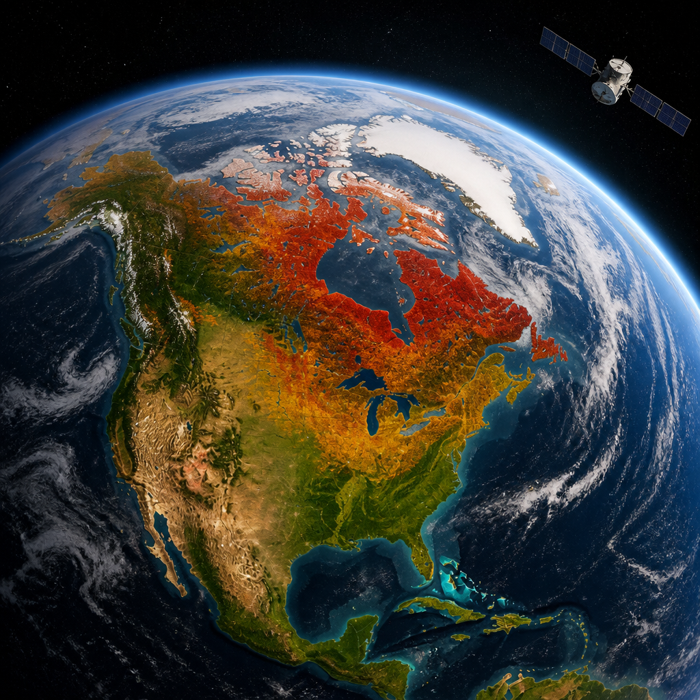
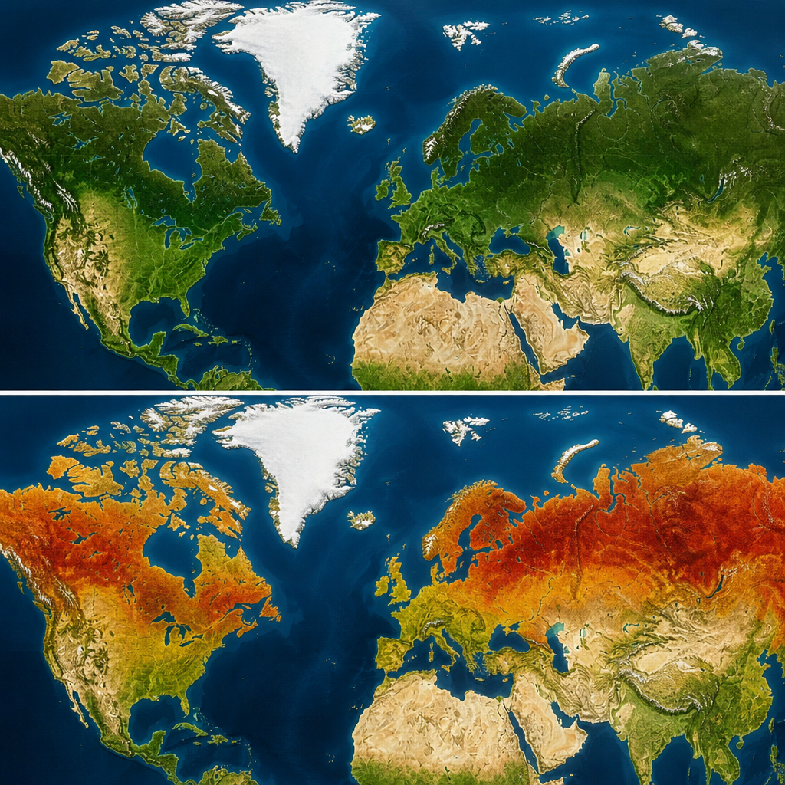

Le misure dei pigmenti vegetali mostrano come i colori autunnali si spostano verso sud e aiutano a studiare lo stato della vegetazione.
Osservare le foglie d’autunno è una tradizione antica, ma oggi può essere seguita anche dallo spazio. Il satellite PACE della NASA misura ogni giorno i colori della vegetazione e permette di seguire, su scala globale, l’avanzata stagionale delle tonalità rosse, gialle e arancioni. Le mappe elaborate con questi dati non mostrano soltanto dove il paesaggio appare più colorato: descrivono i cambiamenti nei pigmenti delle foglie, cioè nelle sostanze che danno loro il colore.
Tra la fine di settembre e l’inizio di ottobre, le aree con la vegetazione più rossa erano particolarmente estese nell’Alaska settentrionale, nel Canada settentrionale e in zone della Russia settentrionale e orientale. Nella settimana successiva, le aree più intense si sono spostate verso l’equatore: il colore è comparso maggiormente nel Medio Atlantico degli Stati Uniti, nel Sud-Est del Paese, nella Russia meridionale, in Cina e in Mongolia. Iniziň Nuova Inghilterra e nello stato di New York, invece, il segnale di arrossamento iniziava già a diminuire mentre si diffondeva in buona parte del Midwest e del Medio Atlantico.
Lo strumento OCI, a bordo di PACE, è iperspettrale: osserva la luce in molte fasce molto ristrette dello spettro, così da riconoscere variazioni sottili nei pigmenti vegetali. Lo strumento effettua osservazioni di oceani e vegetazione in 286 bande spettrali, cioè intervalli di lunghezze d’onda della luce. Alcuni gruppi di queste lunghezze d’onda consentono di seguire tre pigmenti importanti per i colori autunnali: le antocianine, associate ai rossi; i carotenoidi, che contribuiscono ai gialli e agli arancioni; e le clorofille, responsabili del verde.
Gli scienziati confrontano nel tempo quanto rosso, arancione e giallo mostrano le foreste rispetto al verde. Questo rapporto indica dove le foglie stanno cambiando e quando il colore raggiunge il suo massimo. Nelle mappe, il verde corrisponde a valori vicini a 1: il satellite rileva all’incirca tanto rosso quanto verde e gran parte delle foglie non ha ancora cambiato colore. Le tonalità dal giallo chiaro al rosso indicano invece quantità via via maggiori di pigmento rosso rispetto al verde.

In autunno le foglie cambiano colore perché perdono clorofilla, una molecola verde che le piante usano per sintetizzare il cibo. La clorofilla non è stabile e deve essere prodotta continuamente, un processo che richiede luce solare abbondante e temperature calde. Quando le giornate si accorciano e le temperature scendono, i suoi livelli diminuiscono. Il verde quindi si attenua e diventano visibili carotenoidi e antocianine.
Alcune delle zone più rosse comprendono gli Adirondack nello stato di New York, le Green Mountains nel Vermont e le White Mountains nel New Hampshire. Qui sono diffusi l’acero da zucchero e l’acero rosso, alberi decidui che in autunno assumono un intenso cremisi. Nelle aree di tundra paludosa dell’Alaska settentrionale, del Canada e della Russia potrebbero contribuire al rosso intenso anche mirtilli, mirtilli neri, carici, muschi ed erbe.
Un’altra osservazione, ottenuta il 3 ottobre con lo strumento OLI del satellite Landsat 9, ha mostrato fogliame intensamente rosso attorno a Ripton, nel Vermont, in prossimità del massimo arrossamento regionale. Sui rilievi boscosi del Vermont centrale dominavano rosso e arancione, mentre le valli fluviali e le aree a quota più bassa restavano verdi.
PACE è il primo satellite capace di misurare tutti e tre questi pigmenti chiave sull’intero pianeta ogni giorno o due. Altri satelliti dotati di sensori iperspettrali possono compiere misure simili, ma su aree più limitate e meno frequentemente. La successione delle osservazioni nel tempo permette così di individuare i picchi di rosso e di giallo in qualunque parte della Terra.
Nell’ambito della campagna nordamericana sulla fenologia, lo studio dei tempi dei fenomeni stagionali, il programma GLOBE pubblica ogni settimana mappe dell’arrossamento della vegetazione. Le mappe mostrano ondate di rosso che emergono alle alte latitudini in agosto e si spostano verso l’equatore in settembre e ottobre. Il gruppo di PACE chiede inoltre al pubblico di inviare fotografie del fogliame autunnale: le immagini raccolte al suolo servono a verificare le osservazioni satellitari e a comprendere meglio i fattori che influenzano il colore della vegetazione.
Il rosso rilevato dal satellite non indica sempre i normali colori d’autunno. In alcune aree agricole, per esempio, le colture possono mostrare alti livelli di antocianine quando invecchiano o dopo il raccolto. Anche la siccità o i danni causati dagli insetti possono modificare i pigmenti. Questi fattori potrebbero spiegare perché PACE misura livelli elevati di rosso in regioni agricole di Brasile, Australia e Canada che non seguono da vicino il più ampio andamento stagionale. Le nuvole, inoltre, possono produrre apparenti vuoti nella vegetazione sulle mappe.
Le fotografie da terra possono aiutare a rendere più precise le misure del colore della vegetazione effettuate da PACE. I dati potrebbero sostenere studi sui cambiamenti nei tempi del rinverdimento primaverile e della senescenza autunnale, cioè il progressivo declino stagionale dell’attività delle piante; sugli effetti della vegetazione sul ciclo globale del carbonio; e sull’influenza del colore delle foglie sul rischio di incendi. Gli scienziati vogliono anche capire se queste osservazioni possano individuare segnali precoci di siccità, infestazioni di insetti e malattie delle piante.
Questo articolo l'hai letto sul blog di Meteo News Radar: un'app che ti mostra da dove vengono i numeri, invece di limitarsi a dartelo. E ogni mattina ne trovi uno nuovo come questo.